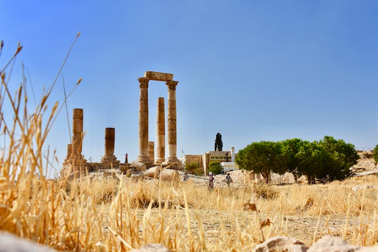

Amman City
City Center

Amman City
Jabal Alqalaa
Amman City
King Abdullah Mosque
is the capital and the largest city of Jordan, and the country's economic, political, and cultural center.[7] With a population of 4,061,150 as of 2021, Amman is Jordan's primate city and is the largest city in the Levant region, the fifth-largest city in the Arab world, and the tenth-largest metropolitan area in the Middle East.[8]
The earliest evidence of settlement in Amman dates to the 8th millennium BC, in a Neolithic site known as 'Ain Ghazal, where the world's oldest statues of the human form have been unearthed. The city was known as Rabat Aman during the second millennium BC and served as the capital of the Ammonite Kingdom, centered at the Amman Citadel. In the 3rd century BC, the city was renamed Philadelphia and made a regional center of Hellenistic culture. Under Roman rule, Philadelphia was one of the ten Greco-Roman cities of the Decapolis. The Rashidun Caliphate conquered the city from the Byzantines in the 7th century AD, and renamed it Amman. Throughout most of the Islamic era, the city alternated between periods of devastation and abandonment and periods of relative prosperity as the center of the Balqa region. Amman was largely abandoned from the 15th century until 1878, when the Ottoman Empire began settling Circassians there.
See it on the map